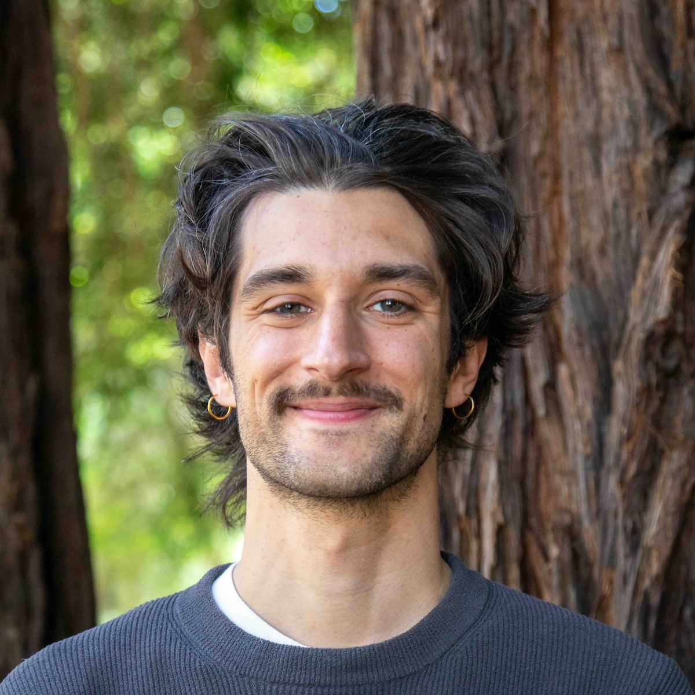

Gaspard Farge
| IPGP 🇫🇷 | |
| ORCID | |
| Scholar | |
| GitHub | |
| Vimeo | |
| Freesound |
IPGP—Sismo—b371
1 rue Jussieu 75005 Paris
+33 1 83 95 75 65
Sonification projects
Here are a few sonification and visualization projects I’m working on. You can find more of them on:| Freesound | |
| Vimeo |